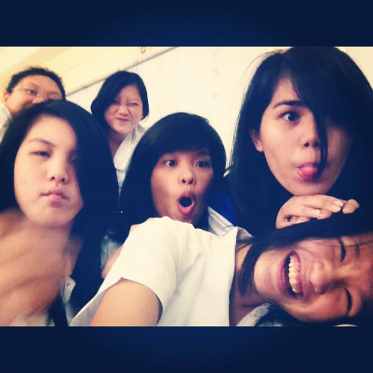

When I was a child, all I do was eat; thus, explains the Michellin like figure. Hahaha. I also loved sleeping.
I was pretty much a big snooze ball as a kid. I also loved watching cartoons such as Little Bill and Powerpuff Girls.
Coloring boooks were pretty much my thing back then, too. The sad thing is that my parents were pretty strict;
thus, explains my lack of knowhow on riding a bike.

High school is pretty much one of the best years of my entire life. Attending an all girls school gave me my much needed freedom.
It was truly liberating to do whatever you want inside those halls because you could relate to one another - without a man dragging you down. (Kidding. Haha.)
High school's where I found my friends, honed my skills, developed my personality and lived life.
I wouldn't trade my little pseudo convent of a school for any grand high school experience.
There were a few bumps on the road but those little setbacks made me who I am today.
From surpassing the dreaded Math 17 New Freshman course to the selection of what supposedly could be my
thesis topic for my senior year - everything about this journey is both excruciating and beautiful
My current life is what I consider to be the turning point of my life - I am no longer a child nor am I really an adult.
Tho, I could attest to the fact that I am now mature - all the experiences I've had in this university has honed me to be better.
The main reason as to why I chose Economics as my undergraduate degree is due to the fact that I would like to become a lawyer in the near future.
My love for TV series has made Scottie from Suits my life peg.
She is a Harvard Law graduate and is working at one of the top law firms in New York.
As for my goal, I am hoping to land in a spot at one of the top law schools in the Philippines - may it be UP, Ateneo or San Benda.
Hopefully, I only have 1 year left here in LB and could pursue my dreams.